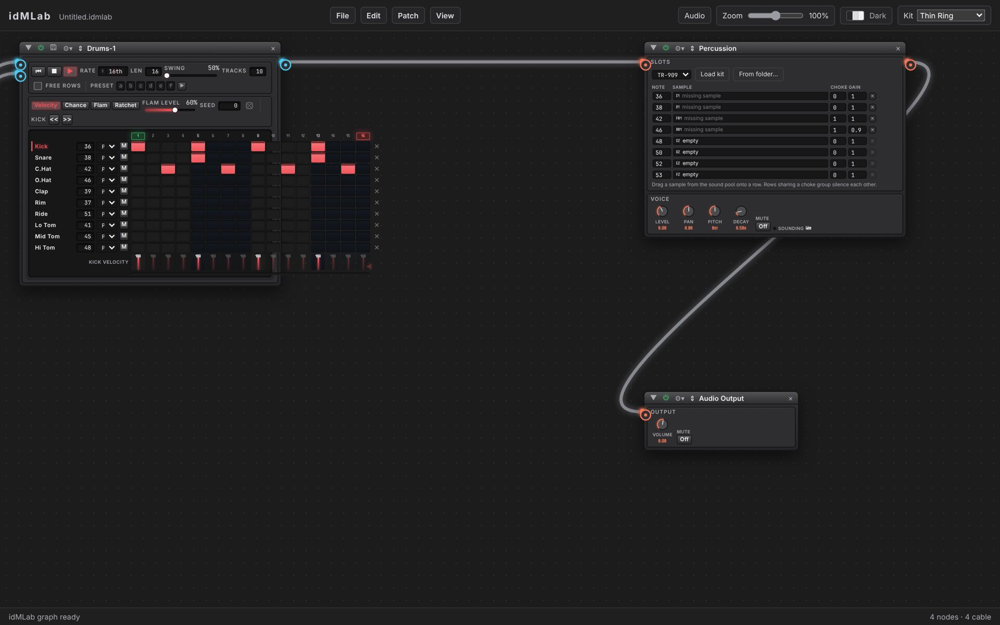
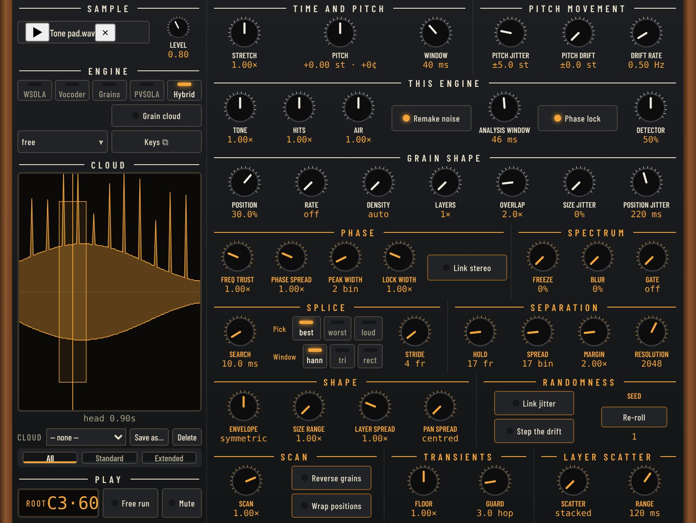

idMLab
A node-graph environment for generative music. Patch clocks, patterns, the M engine, a grain engine and 86 effects on one canvas, with every control on the node itself.
ProductAudioBuilt with AI
1,454automated tests
378numbered requirements, checked against tests
86shared effects
10build waves in one plan
The problem
- I had built separate products that share engines: a composer, a grain engine and an effects library.
- Musicians shouldn't have to choose between them.
- The platform had to grow without breaking what already worked.
What I did
- Mounted M Classic as a package, not a copy, so it still passes its own test suite.
- Wrote a spec of 378 numbered requirements, with a script that flags any requirement no test covers.
- Ran the grain engine and the shared effects in the browser as Rust compiled to WebAssembly.
- Planned the build in ten waves, each named for the shared piece it builds: signal, parameters, canvas, rack, instruments, MIDI, time, visuals, CV, plugin.
- Put every control on the node's face, with no inspectors to open.
What changed
- Two halves that each work: the browser app and a portable Rust audio core.
- Joining them is the current wave.
- A path from a free web app to an invite beta to a paid desktop app and plugin.

